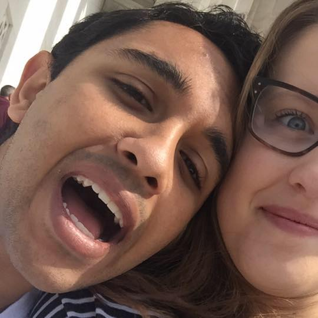

We first met sophomore year of high school, way back in 2012. I noticed you, the kind, pretty girl who had the misfortune of sitting next to me, a class clown. But I was too busy being me. I spent half the year ignoring you, thinking "Well she's one of the good ones, why would she bother with me?" and instead focusing on the other girls around me. But, something else was meant to be. I don't know if I believe in anything like fate, or whatever, but I'm grateful the Universe gave me Billy. Billy, the best friend who would talk to anyone he deemed nice, and who made friends faster than anyone I've yet to meet. He made you laugh. He also made B laugh. By second semester, you were friends. As luck would have it, my best friend had, unbeknowst to him, brought someone into my life that I was about to fall head over heels in love with. You needed a calculator for an exam. I don't know what went through your mind, or what wicked force drove you, but you stopped me in the hallway and asked if you could borrow one. My first instinct, actually, when anyone asks me to borrow anything, is to say no. My mind began searching for an excuse. "Sorry, don't have it on me." "Sorry, I need it next hour." But then, something happened. I still don't know exactly what when through my mind, or waht wicked force drove me, but my gut said "yes" and then my mouth was saying "yes" and you were smiling and I couldn't help but smile. And then you returned it, exactly when you said you would. You're very good about stuff like that. As the semester went on, I got to know you better. You were angry with me, however, for ignoring you for so long. Rightly so. I was, quite frankly, a dick. But that same wicked force planted an idea in my head: "What if I can become friends with her?" and so I tried. It was, as I'm learning a lot of things are, a long process. It wasn't easy enough to simply direct my attention toward you. Again, rightly so. So I was left with no choice. I had to be nice to you, something very painful for me to do for deep, probably tragic psychological reasons. And so you warmed to me. By the end of the year, we were no longer enemies, but rather maybe acquaintances. By then, I had realized that I liked you. You were kind, compassionate, hard working, smart, and gorgeous. Wayyyyy out of my league. But still, it was worth a shot - I knew, however, that it would be a long process. I decided to focus on the two things I thought you held above the rest: family, and good old-fashioned effort. So I began the long process to trick you into falling for me. It began quite innocently, actually. I happened to be friends with someone you had known for a long time. So I got him, Avery, to agree to play tennis, doubles, in fact, because I know both you and B loved tennis. I also know you would kick my ass. So to prepare for that, I dragged Billy out to the tennis courts almost every day leading up to it just so I wouldn't completely embarrass myself. Poor guy didn't know what he was getting into. Anyway, by the time the doubles game rolled around, I was no longer completely inept, and could at least swing the racket and hit the ball into play. So we played doubles, and our mutual friend was pretty bad, and thankfully made me look a little better. I casually said "We should play again sometime," and I don't know if you were just being nice or if you were really short on people to play tennis with, but you said okay. And so we had another doubles day set up. Lather, rinse, repeat. I was better and ready to show it. Unfortunately, you were sick, and I was pretty disappointed. So when I made plans with you and B the next time, I made sure you would be there. I also ditched the friend, as he had been a good friend and served his purpose as an icebreaker. The next time we played, you asked if it was okay if your little brother came. I was very excited. I knew that if I could get along with him, it would mean a lot to you. And I knew I was pretty good with kids. So I did. We got along great, and then we all went to get snow cones afterward. It was a great summer day, despite the heat, and I came away feeling like I had made a good impression. Tennis became the excuse to hang out with you. I played more games of tennis that summer after sophomore year than I had ever played in my entire life. And I was having a blast, because I was getting to know you really well and was falling for you harder every day. By August, I had caught a lucky break. Lauren also came to play, and we were all getting along really well. That's how Billy and I first got invited to your house. You were going to hang out with Lauren one evening, and invited us over too. I know you were just being nice. But I saw it as an opportunity to get to know your family and make even more good impressions. Before I did, though, I needed to do some fixing of my own. I was 16, absent-minded and sloppy. I dressed poorly and wasn't great at meeting new people. To help overcome my shy nature, I bought new clothes, nice ones that fit better than sloppy t-shirts, and worked on my parent skills. And when we started coming around your house more often, and as I got to meet your parents more often and get to know them better, I tried my best to make a good impression. And I did. I shook their hands well and talked to them about interesting things. It helped that they thought I was bright (brighter than I really was) and that they generally liked me. Your parents and me were getting along really well, and I could tell that at this point, I was getting along well with your whole family, and with your closest friends. I could even tell that you may have been coming around to liking me. We had spent almost all summer together, but I knew the next step was to spend time with you, just you. And show you that I could be more than a light-hearted, always-joking guy. I tested the waters with group meals. I would ask you and B to come eat with me and some random mutual friend we had, and it would be completely weird and awkward, but every time, we would get along great, and it almost felt like I had blinders on because the whole restaurant would disappear and all I would see was you, across the table, smiling at some dumb joke I had made, and I saw your beautiful blue eyes and I fell for you harder than ever. Eventually, as the summer was ending, I gathered the courage to ask you, just you, to dinner. You were reluctant. And nervous. But you wore that white t-shirt and jeans and that red headband and those converse and I still remember it, the whole thing. The date itself went terribly. Maybe that's why you don't count it as our first date. But it went terribly because I was an idiot. Other than the stupid choices of conversation I made (exes, etc), I think we really enjoyed each others' company. In fact, despite friends of ours awkwardly questioning us at the beginning, and awkwardly crashing desert, I think we both came away having a great time. So much so, in fact, that you agreed to go out with me again. And by November, we had gone on many dates. And on November 17, 2013, I nervously pulled a little necklace out of my pocket on a chilly afternoon and asked you to be my girlfriend. The rest, as they say, is history. P.S. I didn't put all the details in this. I had to save something for the date:)